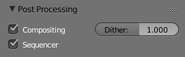

后期处理面板¶
指引
面板:
用于操控不同选项，这些选项是用于处理渲染完成的图像。

后期处理面板
- 序列编辑器
- 通过勾选开启“序列编辑”功能，将渲染（合成）结果导入至序列编辑器，代替在3D场景下的活动摄像机视图输出。如果序列中包含场景条，那么这将同样作为流水线中的一部分。如果启用 合成处理 ，那么场景条将导入节点编辑器。
- 合成处理
- Renders the output from the compositing node setup, and then pumps all images through the Composite node map, displaying the image fed to the Composite Output node.